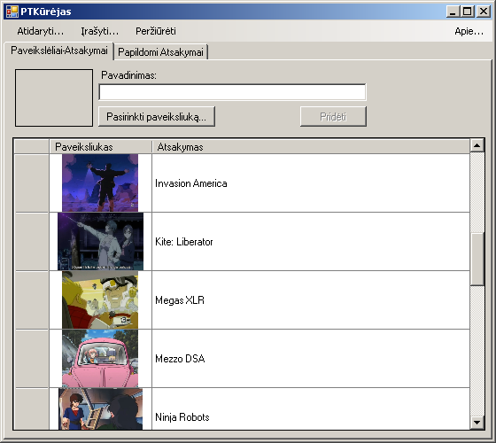
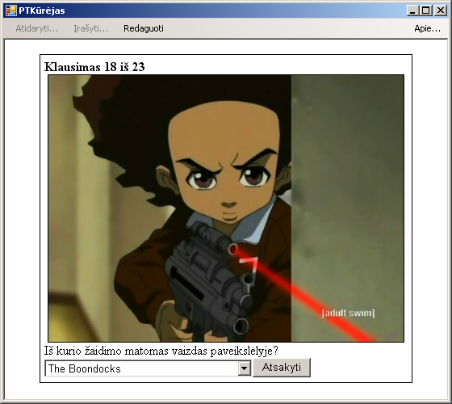
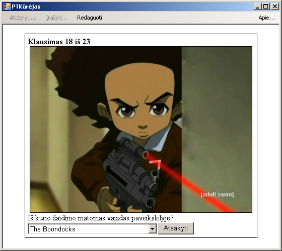
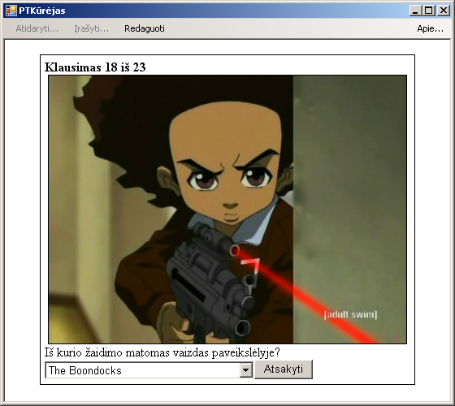
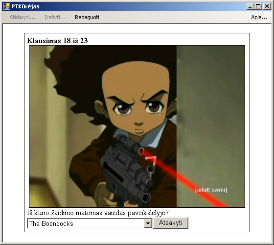

 


PTKūrėjas
Tai programėlė, kurios pagalba galima susikurti paveiksliukų testus, kurie vėliau gali būti įterpiami į tinklalapius.

Tai programėlė, kurios pagalba galima susikurti paveiksliukų testus, kurie vėliau gali būti įterpiami į tinklalapius.
Donec id elit non mi porta gravida at eget metus. Fusce dapibus, tellus ac cursus commodo, tortor mauris condimentum nibh, ut fermentum massa justo sit amet risus. Etiam porta sem malesuada magna mollis euismod. Donec sed odio dui.
PT Kūrėjas sukurtus testus išsaugo failuose su PTKF galūnėmis. Šiuos failus galima atsidaryti su bet kuria archyvavimo programa palaikančia ZIP failų formatą.
Atsidarę bet kurį tokio formato failą, pamatysime krūvą paveiksliukų failų sunumeruotų nuo 0 iki n (n - kiek paveiksliukų yra teste minus vienas). Taip pat ten rasime quiz-core.js, quiz-data.js, quiz-test.html failus. quiz-core.js - tai JavaScript kalba parašytas failiukas, kuris atsakingas už tai kaip veikia testas. Vadinasi, dažniausiai šio failiuko redaguoti nereikia. Visiems testams jis turėtų būti vienodas. Tuo tarpu quiz-data.js kaupia informaciją apie testą: klaidingus ir teisingus atsakymus bei išvis įmanomus variantus. Šį failiuką prieš kur nors keliant, tikėtina, kad gali tekti atitinkamai pagal situaciją paredaguoti (jei paveiksliukai saugomi bus ne ten pat kur ir šis duomenų failas, reikia pasikeisti paveiksliukų failų pavadinimus į pilnus jų adresus). quiz-test.html - tai sugeneruojamas HTML failas, kuris gali būti atidarytas su bet kokia naršykle. Išpakavus PTKF failo turinį į kokį vieną katalogą ir pasileidus šį HTML failiuką, galima atlikti testą.
Žinant failų paskirtį, galima sukelti visus reikalingus į nuosavą tinklalapį. Norimam tinklalapio puslapyje tuomet belieka įdėti kodą:
<script type="text/javascript" language="javascript" src="quiz-data.js"></script> <script type="text/javascript" language="javascript" src="quiz-core.js"></script>